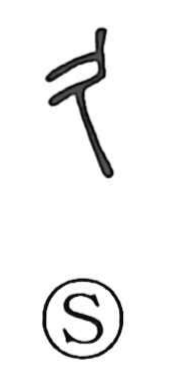

久

Uncategorized
Kun: hisashii | On: kyuu, ku
a long time ・ long-lasting ・ eternity
Explanation
This character began as a pictograph of a human corpse propped from behind with a stick. From that image, the act of placing the body in a wooden container yielded 柩 (wood + 久), the word for a coffin. As a verb, 久す meant to support or prop up. Because a corpse evoked the realm beyond, and ancient people saw the afterlife as endless in contrast to the brief span of human life, the graph came to signify long duration and even eternity (as in 久遠). A similar shift is seen in 真, originally depicting a person dead by the roadside, which later developed the meanings of truth and reality.